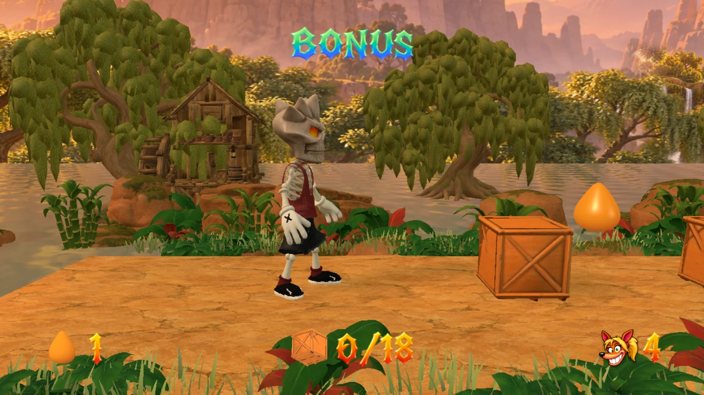
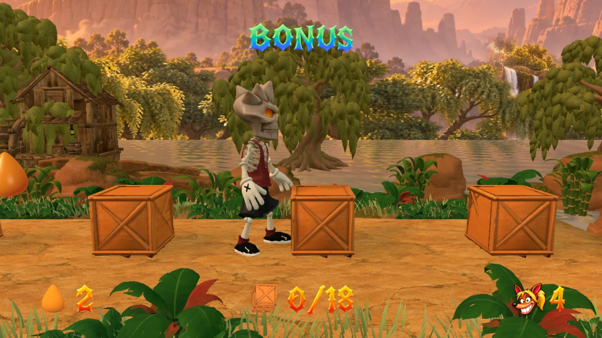
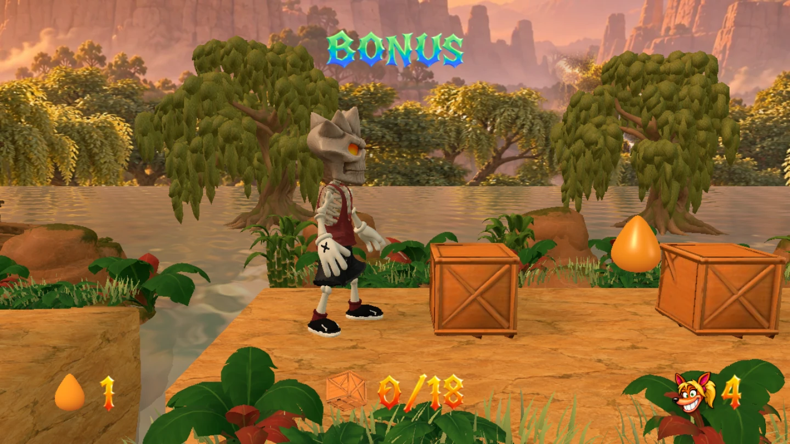
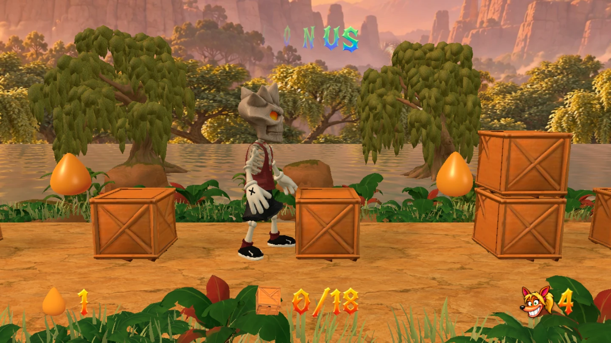
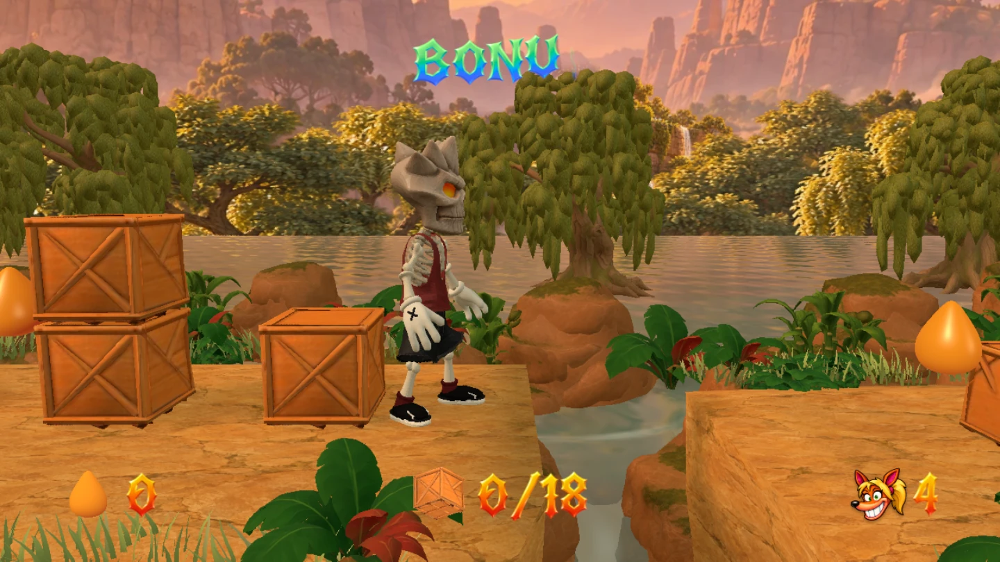
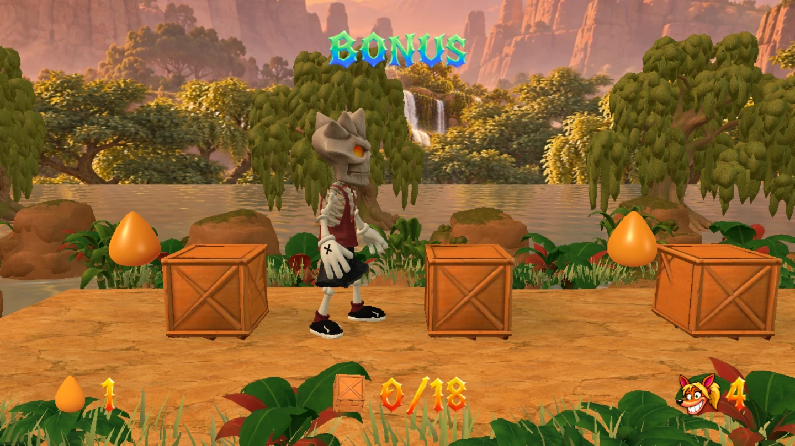
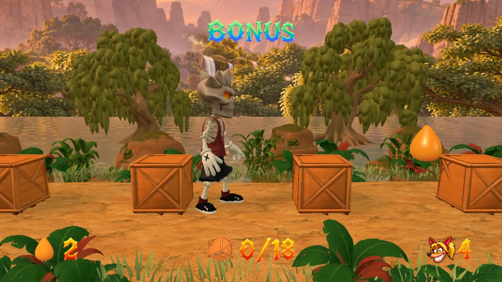
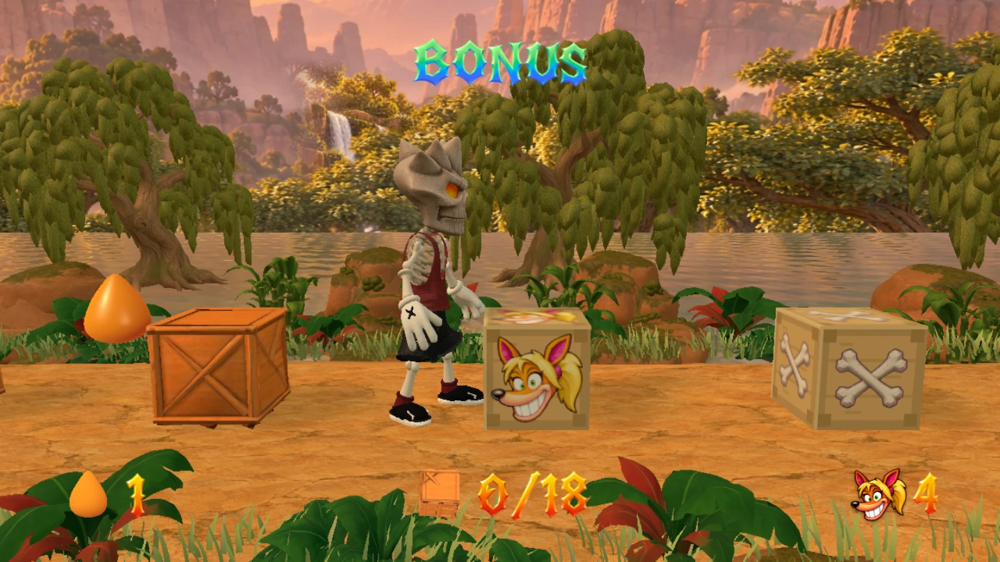
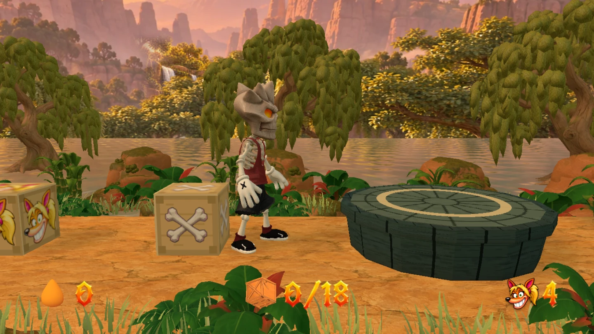

Custard Creek — Willowmill Cache storyboardCustard Creek / Art & play review
Willowmill Cache
Nine player-view sections, from the original bonus to the image-generated storyboard and rebuilt game. The same two crossings and 18 reward boxes are retained.
Final full-render game captures. Click any image to inspect it at full size.
01
Arrival at Willowmill
x = -12m

02
The old towpath
x = -4m

03
First creek crossing
x = 5.4m

04
Raised cache
x = 12m

05
Second creek crossing
x = 19m

06
The reedbank
x = 26.5m

07
Along the millpond
x = 34.5m

08
Reward bank
x = 42m

09
Return to Custard Creek
x = 47m
